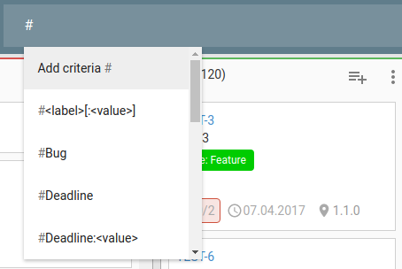
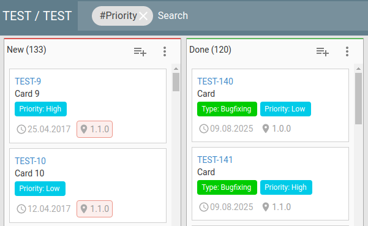
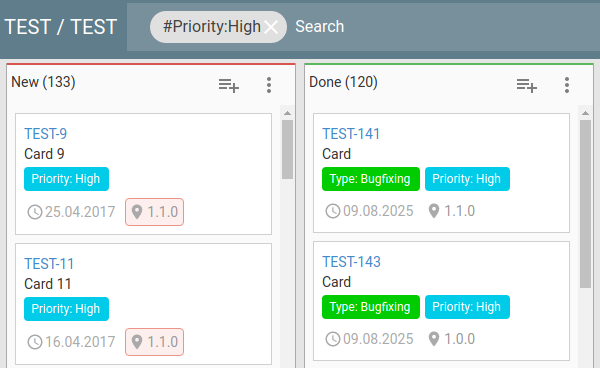

- 3.7Search
- 3.7.1Filters
- 3.7.2Single board search
- 3.7.3Global and project specific search
3.7Search
The search bar at the top is context sensitive. The context are:
- global search: when the user is in the Dashboard
- project specific search: when the user is in a project
- board filter: when the user is in the board view
Currently the search only support implicitly the “AND” operator. Each search term is part of the list of filters that must match.
3.7.1Filters
In both the global/project and board filter the following filters can be defined. For most filters, only a single value can be specified. The filters that receive dates as a parameter can receive two dates for defining a time interval.
3.7.1.1label
A label filter begin with the hash symbol: ‘#’.
When entering # in the search bar, a list of possible label is displayed. For example:

When confirming the filter, the search will be done. In this case all the cards with the label “Priority” are shown, regardless of the associated value.

For searching the associated value, the complete syntax is : #LABEL: ASSOCIATED_VALUE, in the screenshot below it can be seen in action:

3.7.1.2to
For searching the cards assigned (or not) to a specific user, the “to: ” filter must be used.
The following values are permitted:
- to:me
- to:unassigned
- to:LOGIN_PROVIDER:USERNAME
The “to:me” show the cards assigned to the current user.
The “to:unassiged” show all the cards without an assigned user.
The “to:LOGIN_PROVIDER:USERNAME” show the cards assigned to a specific user. For example: “to:demo:user1”.
3.7.1.3by
“by” search all the cards created by the specified user.
The following values are permitted:
- by:me
- by:LOGIN_PROVIDER:USERNAME
Like the “to” filter, the “by:me” search the cards created by the current user and “by:LOGIN_PROVIDER:USERNAME” show the ones created by the specified user.
3.7.1.4created
“created” show all the cards created in the specified time interval.
The supported values are:
- created:DATE
- created:DATE1..DATE2
- created:late
- created:today
- created:this week
- created:this month
- created:previous week
- created:previous month
- created:last week
- created:last month
The supported DATE format is yyyy-mm-dd. For searching an interval, add “..” between the two dates, for example: “created:2015-02-01..2015-10-01”
“created:late” will show all the cards created in the past.
3.7.1.5watched
“watched” search all the cards watched (or notd) by a specific user.
The permitted values are:
- watched:me
- watched:unassigned
- watched:LOGIN_PROVIDER:USERNAME
Like the “to” filter, the “watched:me” search all the cards watched by the current user, watched:unassigned search the one without watcher and finally “watched:LOGIN_PROVIDER:USERNAME” show the cards with the specified user.
3.7.1.6updated
The “updated” filter show all the cards that have been updated in the specified time interval.
The following values are supported:
- updated:DATE
- updated:DATE1..DATE2
- updated:late
- updated:today
- updated:this week
- updated:this month
- updated:previous week
- updated:previous month
- updated:last week
- updated:last month
It follow exactly the same behaviour as the “created” filter.
3.7.1.7due
The “due” filter search all the cards that have the due date specified.
The following values are supported:
- due:DATE
- due:DATE1..DATE2
- due:late
- due:today
- due:this week
- due:this month
- due:previous week
- due:previous month
- due:next week
- due:next month
- due:last week
- due:last month
It follow exactly the same behaviour as the “created” filter, in addition “next week” and “next month” are available as a shortcut.
3.7.1.8updated by
“updated_by” search all the cards updated by a specific user.
The following values are permitted:
- updated_by:me
- updated_by:LOGIN_PROVIDER:USERNAME
Like the “by” filter, the “updated_by:me” search the cards updated by the current user and “updated_by:LOGIN_PROVIDER:USERNAME” show the ones updated by the selected user.
3.7.1.9milestone
For searching the cards that are assigned (or not) to a specific milestones, the “milestone:” filter must be used.
The accepted values are:
- milestone:unassigned
- milestone:MILESTONE_NAME
The “milestone:unassigned” search all the cards without an assigned milestone.
3.7.1.10status
The status: filter allow to search the cards that are in a specific status (OPEN, CLOSED, BACKLOG, DEFERRED).
The following values are valid:
- status:OPEN
- status:CLOSED
- status:BACKLOG
- status:DEFERRED
3.7.1.11location
The location: filter search for the cards that are in a specific location (BOARD, ARCHIVE, BACKLOG, TRASH)
The following values are valid:
- location:BOARD
- location:ARCHIVE
- location:BACKLOG
- location:TRASH
3.7.1.12Free text search
All the text that don’t fall in the others filters is considered a “free text search”. At the moment it use the functions from the underlying DB.
3.7.2Single board search
In the board view, the search bar generate a client side filter that is continuously applied when the cards are updated like the following screenshot:
Note: in this view, the “free text search” will only work on card names due to the search being performed client side.
3.7.3Global and project specific search
When the search is triggered in the home page, a global search is done in all the projects that the user has access to.
When the user is in the project page, a project specific search will be done.
Bulk operations will be available in this view. Learn more